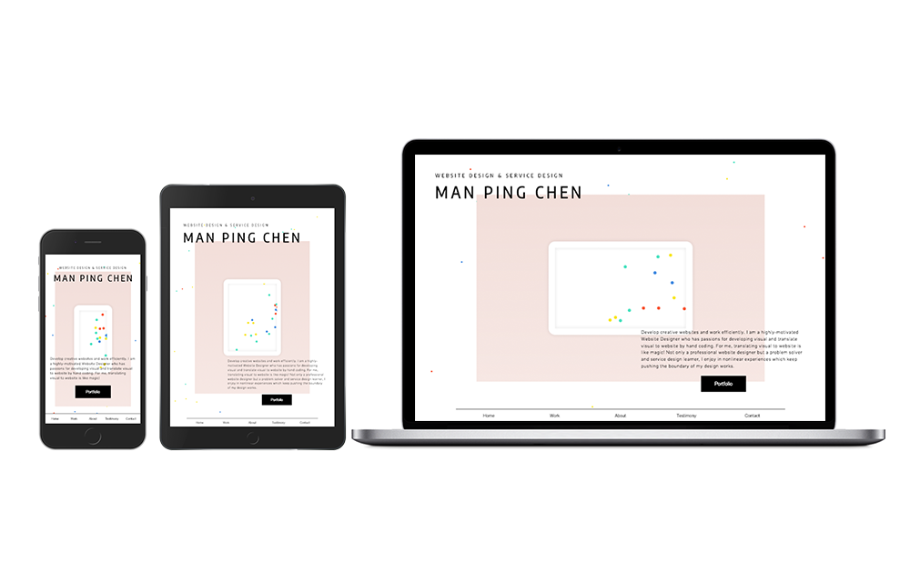

Manping Chen Design WEBSITE
- Visual Design
- Hand Coding
- RWD
To show my profession and personality, I used hand coding and website design to transfer the main information. The smaller dots in the background are inspirations flowing from around the world, and the bigger dots in the middle frame of the screen is the inspirations I connect with coding to make distinct designs.
Also, the frame with the bigger animated dots in the middle of the screen is flexible and represents the exact proportion of viewer's screen, which presents my professional skills of designing responsive websites.